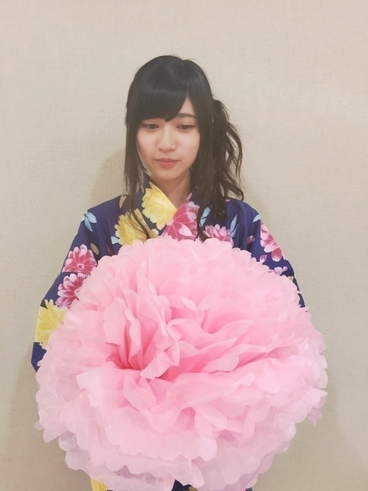

2015/0830Sun神宮には何万人入るのですか そしてこのブログはそのうち何人 の方に見てもらえてるのかな(・ ・?
今日は神宮LIVEです
去年の今頃のブログを読み返したら
いろんな事書いてあって
懐かしいなーって思うのと
今年少しでも成長した自分を
何万人の方に見てもらえるよう
気を引き締め頑張ります。
でも天気は
雨、曇
絶対転ぶ気がする(・_・)
転ばないように
転ばないように
見守ってて下さい。
皆さんも
ちょっと寒かったりして
次の日から
風邪とかになってしまったら
嫌なので
体温調節のできるお洋服
カッパ
あと、体を拭ける
ちょっと大きめのタオル
推しメンマフラータオルとかも
今日はメンバーへの
アピールにもなる上に
雨から見を守れるというハイテクさ
すばらしい素晴らしいo(^o^)o
大きい声だして
夏最後乃木坂で盛り上がって
楽しみましょう
わぁーーーーぁああっっ！
髪型どうしましょう
ツインテールの予定なのですが
ハーフツインとも
迷ってますし、、、
寺田蘭世

2015/08/30 08:30


コメント(2204)
特に真夏には言っといて（笑）
最後の写真なんだろう？
神宮頑張って
楽しみにしてる！
雨で転ばないように気をつけてね！
くるちゅん。
昨日の生写真も蘭世がたくさんでてうれしかったー
今日雨降るかもだけど一緒に盛り上げよう！
蘭世も風邪をひかないように気をつけてください
神宮ライブ楽しみましょう！
神宮行きます！
今から楽しみで仕方ないよ
見守ってるから転ばないように気をつけてね！
では、またコメントします
一緒に盛り上げよう〜！(￣0￣)/ ｵｫｰ!!
天気もってほしいよね
31日行くよ！！
たいめし。
らんぜ～♪
神宮行けないけど
香川から応援してるね(^-^)/
天候悪いみたいだけど
乃木坂のパワーで吹っ飛ばしてね！
ファイトーo(^o^)o
こんにちは
こんばんは
今日の神宮参戦します！！
ライブの間だけでも雨が止んでくれればいいなー(^o^)/
楽しみにしてます！！
神宮、今日も明日も行くよーo(^o^)o
今日明日頑張ってーーー！！
らんぜのいきおいとまらんぜっ♡
ゆかたかわいい♡♡
今日雨マーク消えて曇りマークだけになったらしいよ！
くれぐれも転ばないようにね。
(転ぶところも見たかったりもするけど…←)
今から飛行機で向かうからねー。楽しもう！☺
今日の神宮楽しみにしてるよ(^_^)
おはよう。
神宮いますよ。
席は悪いけどちゃんと見るね！
がんばれ！
神宮LIVE頑張ってー！
見に行けないけどてるてる坊主作って晴れるのを祈ってます！
会場のみんなに蘭世の成長した姿を見せつけちゃって下さいo(^_^)o
蘭世おはよう！
きょうライブ入るよ！
ちょうど1年前のきょう。神宮球場でロマいか踊る蘭世をみて蘭世のことすきになったの！
いままで2期は違う子みてたのに
すごい遠くの席から
なに！あの子！気になる！ってみてたら
蘭世でね、なんかびびび！ってきたの！（笑）
そして1年経ったきょうは蘭世の団扇持つ予定！
最後までつっぱしれーーーー！！！
_
転んだら転んだで面白いけどね(￣∀￣)
神宮LIVE楽しみましょーー(」・ω・)」うりゃ！(／・ω・)／おい！
今日の神宮公演、蘭世の推しタオル持って行くよ♪
天気は雨かもしれないけど雨雲を吹き飛ばすくらい盛り上がろうね(๑^-^๑)
今日も明日も、アリーナDブロックなので、たぶんセンターステージの近くで応援するよ。
例のうちわに、防水加工していきます
(ラップを巻くだけなんだけどねw)
あと一息、頑張って最高のステージにしていこう、
今日神宮参戦するぜー
がんばってこーぜ
|(￣3￣)|
こんにちは
こんばんは
蘭世おはよう！(挨拶二回目笑)
今日神宮行くよ〜！
昨日、ビッグサイト行って
マフラータオルにうちわ、缶バッチとか蘭世グッズ買ってきたんだ！
残念ながら残暑お見舞いカードはゲット出来なかったんだけど…
でも生写真はゲット出来たから良かったよ！
今日はあいにくの雨模様だけど、楽しむよ！
転ばないように見守ってるからね〜！
蘭世も風邪引かないようにね！
それじゃ、盛り上がっていきましょう！！！
それじゃ、また。ライブ後に！
ブログアップありがとう！
いよいよ真夏の全国ツアーファイナル神宮球場だーーーーーっ*\(^o^)/*
降水確率かなり高いけど
絶対に負けないぞーっψ(｀∇´)ψ
てるてる坊主作ったし、めちゃ気合入れていくよぉーっ‼︎‼︎
らんらんが絶対に転びませんように‼︎‼︎‼︎‼︎
今日も一緒に、全力で楽しもうね♪( ´▽｀)
see you
ライブで輝く蘭世ちゃん、楽しみにしてます！
またあとで！(=ﾟωﾟ)ﾉｼﾞｬ､ﾏﾀ!!
どうもバスケットマンです！
神宮にも行くし！
もちろんブログも読んだよー
ブログはコメントしてるんだから当たり前か…笑
雨かなー…？
でも、体調に気をつけて全力で楽しもうね！
転ばないように落ち着いてね！笑
見守ってます！！
推しメンマフラータオルは昨日ちゃんとらんらんの買えたよー
٩(◦`꒳´◦)۶
ハイテク？ローテク？笑
なタオルに守ってもらうね！
アピールももちろん！！
今日はアリーナでセンターステージの近くにいるから気付いてもらえるかな？
楽しみだー٩(◦`꒳´◦)۶
さて、いよいよです！
全力で盛り上がりましょー٩(◦`꒳´◦)۶
今日も蘭世の勢いとまらんぜー！
蘭世の夢が叶いますように！
正規メンバーとして立つ去年とは違う夏。とても嬉しい！広島、福岡で蘭世のパフォーマンスの成長を感じられたよ！
あとは、思いっきり楽しむだけだよ！蘭世のパフォーマンスは人を幸せにします。感動を呼びます。少なくとも自分がそうでした
地方の僕が今日明日の東京の神宮公演を見られる喜び、あの空気感を味わえる喜びを感じてライブ参戦したいと思います。雨も乃木坂パワーでなんとかなる！！雨降ってしまえばそれ含めてパフォーマンス！！全てポジティブにいこうね！！
二日ともセブンシートでいい席で見させていただきます！地方でも使ってた自作うちわ持っていくね！
ほんとに神宮公演が楽しみ！今年の夏の集大成を楽しみにしてます！そして最高の夏にしましょう！
頑張ってね！
蘭世の勢いとまらんぜー！(´⊙౪⊙)۶ｯｯｯｨｨｨｨｲｲｲｲﾖｯｼｬｱｱｱｱｱｱｱｧ!!!!
みんながやってるような控えめなやつじゃなくて、がっつり触覚あるやつでお願いします。
らんぜちゃんなら幼いし可愛いし似合うと思うよ〜(´๑•ω•๑)♡"
朝でも夜でも、ちわ！
今日神宮だね！今日のライブ参戦します。ツインテールが良いけどハーフツインも良きかな～
雨予報だね(>_<)
朝は止んでたからそのまま止んでてほしい
今日のらんぜも勢いとまらんぜ？
雨でも今日を楽しもうね(^o^)
たくとん
ブログ更新、ありがとう。
適切なアドバイス
ありがとう。
神宮ライブ、楽しみます。
雨以上に、寒さ対策が必要かも。
それでも、メンバーが頑張り過ぎて
風邪など引いて、楽日に出られない
それも心配です。
学校も始まるし、無理しないで
下さいね。
乃木坂のライブ初めてです！
めっちゃ緊張します…
転ぶなや〜
って気にならんくらい楽しんだらいいさ！
行かれんしそれを後悔させるもの作ってけろ
ファイト！
神宮行けないけど心から応援してる⁽⁽ ◟(∗ ˊωˋ ∗)◞ ⁾⁾
がんばれよー♡♡
天気悪そうだけど、アリーナから
オリジナル団扇で、全力で応援するから‼︎
ラスト2日間めいっぱい楽しもうねー‼︎
コメントする